| 参赛队伍 | （待填写） |
| 队伍成员 | （待填写） |
| 指导教师 | （待填写） |
| 文档版本 | 初赛版 v1 · 2026 年 11 月 |
多个 Agent 分工做一件复杂的事，现在并不难；难的是最后那一步：负责写的那个 Agent 说“我做完了，数据都有出处”，平台凭什么相信？我们在早期做检索问答时就吃过这个亏——回答里的数字带着漂亮的引用编号，点开来源，数字却对不上。多 Agent 协作会把这个问题放大：上游一句“完成”，下游就把它当成事实接着往下传。
衡析 VeriFlow 想回答的就是这一个问题。它是一个把“多智能体协作”做成可声明、可调度、可验证、可回放的编排平台：用 YAML 声明知识库、Agent、团队、工作流和策略；调度器按依赖和资源约束并行执行；执行者交出的成果不算数，要由与它隔离的独立核查员重新取证、逐条分级，再过一道由策略定义的质量门；不达标就按失败类型修复，轮次、预算和“有没有进展”都设有上限。整个过程落成结构化事件，界面上可以实时看、事后回放。
我们用“带分析与行动建议的调研报告”作为主场景来验证平台，并用同一套平台跑通了第二个场景（事实核查），换定义、不改平台代码。真实运行中，一份完整报告的耗时从早期的二十多分钟降到 6 到 9 分钟，并行加速比 3.3 到 3.5 倍；质量门首轮未通过的报告，经一轮有界修复后可以通过，也有修复帮不上忙、最终如实披露“未达标”的情况。独立复核在我们的小规模金标集上没有出现把错误说法判为“已核实”的情况，但样本有限，文中会如实给出区间和不足。
本方案书按赛题要求依次说明选题背景、总体架构、Agent 与工作流设计、调度与自循环机制、验证与反馈、核心代码与系统截图、测试与性能，以及人工智能的实际使用情况。文中的数字均来自仓库内保存的运行记录与评测脚本输出，没有手工填写；尚未做到的部分也单独写明。
让一组大模型分工协作，已经是很常见的做法：一个负责拆任务，几个负责查资料，一个负责写，一个负责汇总。框架也很多，写一个能跑起来的多 Agent 演示，大半天就够。但真正拿去做一件要交付的事情，比如一份会被人引用的调研报告，最让人不踏实的并不是“能不能跑通”，而是最后那一句“完成”可不可信。
我们的体会来自自己做过的问答模块。最初的版本检索、生成都很顺，回答里每句话后面都带着引用编号，看上去无懈可击。后来逐条点开来源核对，才发现有的数字在原文里根本没有，有的把“141178 万”读成了“1.41 亿”，有的把单个学校的数据写成了“全国”。模型并没有恶意，它只是在给自己的输出打高分。把这种“自己给自己打分”的结构放进多 Agent 流水线里，问题会被放大：规划员说提纲合理，检索员说资料充足，撰稿员说数据都有出处，每一环都自报通过，最后得到的东西没有人真正检查过。
因此我们把平台的设计重心放在三件事上：第一，成果必须由与执行者隔离的角色独立核查，而不是执行者自报；第二，核查不通过时先诊断失败类型，再有针对性地修复，而且修复的次数、花费和是否有进展都要有界；第三，调度要能根据资源约束和中间结果在运行时调整计划，而不是照着一张写死的流程图走到底。这三点也是赛题里“动态调度”“自我循环”“结果验证与反馈优化”几项要求的落脚点。
我们选择“带分析与行动建议的调研报告”作为验证平台的主场景，典型的输入是一句话主题，例如“2025 届高校毕业生规模与就业情况”“2025 年中国新能源汽车销量与渗透率情况”。选它有三个原因。
其一，它确实复杂。一份像样的报告要经过规划提纲、多路联网检索、摘取数据、分章撰写、逐条核验、补充证据、综合研判、给出建议等环节，天然是多角色、可并行、有依赖的。其二，它可验证。报告里的每个数字都能逐字对到来源原文，每条说法都可以按“已核实 / 单一来源 / 有争议 / 未能核实”分级，结果的好坏可以量化，而不是靠读起来顺不顺来判断。其三，它有现实需求：学校、地方部门和行业研究人员经常要在短时间内拿出一份有出处的情况分析，既怕漏，更怕错。
为了说明平台不是为报告写死的，我们同时实现了第二个场景“事实核查”：用户粘贴一段含数字、日期的文字，平台逐条抽取事实性说法，联网查证并输出带出处和等级的核查表。两个场景共用同一套调度器、核查员和质量门，只是团队与工作流的定义不同。
从上面的场景出发，我们把对平台的要求归纳为八条，并在设计里逐条对应（表 1）。
| 编号 | 需求 | 要解决的问题 | 对应设计 |
|---|---|---|---|
| R1 | 声明式定义知识库、Agent、团队、工作流、策略 | 流程写死在代码里，换场景就要改代码 | YAML 定义层，导入时校验（3.1 节） |
| R2 | 并行执行并尊重资源约束 | 串行太慢；搜索会限流，模型有并发与额度上限 | 就绪集调度、资源池、按数据扇出（4.1 节） |
| R3 | 结果由独立角色验证 | 执行者自报完成不可信 | 隔离的核查员、确定性规则、质量门（5.1 节） |
| R4 | 失败后有界地自我修复 | 无限重试浪费钱，修复还可能越改越差 | 失败诊断、按类型修复、采用条件、无进展即停（4.3 节） |
| R5 | 全过程可观测、可回放 | 黑盒运行，出了问题无从查起 | 结构化事件日志，画布、时间线、质量门面板均由事件生成（6 节） |
| R6 | 时间与成本可控 | 报告任务一跑就是半小时，花多少 token 不知道 | token 与时长预算、非必要任务可取消、并行流水线（4.2 节） |
| R7 | 可复现、可部署 | 评审要能自己跑起来 | Docker Compose 部署，迁移脚本、测试和评测脚本随仓库提供（附录） |
| R8 | 平台通用，而非只服务一个场景 | 只会写报告的“平台”没有意义 | 第二个内置场景事实核查，同一套引擎（3.5 节） |
在动手之前，我们读了几类常见框架的公开资料。需要先说明：下面是阅读文档和社区资料后的判断，我们没有逐一把这些框架装起来做对比实验，因此只作为设计取舍的背景，不作为“某某不行”的结论。
以群聊式协作为主的产品（例如 LobeHub 的 Agent 群组）强在产品化和团队定义的直观，由一个主管根据成员描述和对话历史决定下一位发言者；它的重心是对话轮转，工作流的依赖关系、并发调度和结果验证不是它的出发点，何时结束也主要由主管模型自己判断。面向编码场景的 Harness 类框架（例如 DeepSeek 开源的 dsh）强在插件化和会话轨迹可回放，但多智能体部分主要是子 Agent 调度，同样没有把“独立核查”作为一等公民。LangGraph、CrewAI、AutoGen 这类框架提供了成熟的编排原语（状态图、角色任务团队、多种对话模式），验证、预算和调度策略则需要使用者自己搭。
它们共同留下的空白，用一句话说就是：执行者的自我报告在流程里仍被当作结果。近期关于 Agent Harness 的综述也反复提到，“自报完成”与“经独立核验的完成”之间的差距，是目前多智能体系统可靠性的主要缺口，而“有预算上限、可证明终止”的循环是被普遍认可的方向。VeriFlow 就是把这两点做成平台的默认行为，而不是留给使用者去补。
平台由定义层、编排层、调度层、执行层、验证与反馈层和可观测层组成（图 1）。上层只依赖下层暴露的接口：定义层产生一份经过校验的节点图，调度层只认“任务、依赖、资源池、预算”，完全不知道任务是写报告还是核查事实；业务语义都封装在执行层的“技能”里。这样的切分是后面能换场景、也能单独测试调度器的前提。
仓库里实际有两条业务线，它们共用检索、核验和证据这一层。一条是“查证”问答模块：用户对知识库提问，系统检索、判断证据是否够用、生成回答并逐条核对，不通过时在有界轮次内重检索或重写，仍不行就如实拒答。这条线的纠错状态机用 LangGraph 实现，并在项目早期按 P0 到 P5 的阶段逐级验收。另一条就是本方案书的主角 VeriFlow 编排平台，它把同样的“先核查、再修复、有上限”的思想推广到多 Agent 的报告生产上，并自研了调度器。两条线共享的东西包括：稠密加 BM25 加 RRF 加重排的检索链、说法分级的审计规则、网页来源的可信度分层，以及统一的事件记录方式。
技术栈一部分来自项目最初就冻结的约束（以 LangChain 为主框架、FastAPI、Qdrant、Next.js），一部分是做平台时的取舍。表 2 列出主要选型、理由和我们已知的代价。
| 组件 | 选择 | 理由 | 代价或局限 |
|---|---|---|---|
| 后端框架 | FastAPI + asyncio，分层为路由、服务、仓储 | 调度器本身是异步任务，整个服务同一个事件循环最省事 | 运行任务在 API 进程内执行，重启会中断运行（见 7.5 节） |
| 关系库 | PostgreSQL（asyncpg） | 运行记录、事件、用户自定义定义、反馈都要持久化并可查询 | 无 |
| 向量库 | Qdrant；嵌入模型 nomic-embed-text（768 维，Ollama 提供） | 支持按集合隔离，每次运行使用独立的临时集合，结束即删 | 并发创建同名集合曾出现竞态，已加锁修复 |
| 模型框架 | LangChain 与 OpenAI 兼容接口 | 模型地址、名称、密钥全部来自配置，可换任意兼容服务 | 当前只有一个可用模型（讯飞星火 spark-x2.6），“强弱分档”目前同一个模型 |
| 工作流编排 | 自研 asyncio 调度器 | 需要按运行时数据扇出、资源池、运行中插入任务，这些用静态状态图表达不便 | 最初方案写的是编译成 LangGraph，实际没有这么做，见下文 |
| 问答纠错 | LangGraph | 状态、条件路由和有界循环正好是它擅长的 | 仅用于问答的两个纠错图，不承载领域逻辑 |
| 联网检索 | 自建 SearXNG 元搜索 | 不需要密钥，可指定权威站点优先 | 免费引擎会被限流，冷查询偶发 20 秒以上 |
| 前端 | Next.js 15、React、Tailwind、React Flow、ECharts、Mermaid | 画布、图表、流程图都有成熟组件 | 画布目前是只读展示，不能拖拽拼装 |
关于“为什么没有用 LangGraph 编排工作流”，这里值得多说两句，因为它和最初的计划不一样。我们起草方案时确实打算把工作流定义编译成 LangGraph 状态图，由它负责状态和路由。真正动手后发现，平台需要的几件事——map 节点在上游完成后按真实数据（章节数、搜索批次数）扇出、搜索与模型两个资源池分别限流、质量门不达标时在运行中追加“补检索”和“逐章重写”两组任务——都需要在运行期改变图的形状，静态图的表达很别扭。于是我们保留 LangGraph 在问答纠错里的用法，工作流这一层改为自研调度器。这个改动换来了更直接的并行与资源控制，也让调度器可以脱离业务单独测试。
用户在界面输入主题并选择定义后，后端先把定义解析成节点图并写入一条运行记录，然后在后台任务里启动引擎。引擎按依赖关系把节点编译成调度组，之后的每一步都通过事件落库：规划师产出提纲和检索词；检索员批次并行搜索并抓取网页，写入本次运行专用的语料集合；撰稿员按章节并行取证、摘取并逐字核对数据点、写作；核查员对每一章独立重新取证并分级；质量门汇总指标，必要时在运行中追加修复任务；分析师写综合研判和行动建议；主编统稿并生成证据核实图等图示。前端不直接读调度器的内存状态，而是从事件日志推导出画布着色、时间线和质量门面板，所以一次运行完全可以事后回放。
平台用五类对象描述一个场景：知识库（KnowledgeBase）、Agent、团队（Team）、工作流（Workflow）和策略（Policy，作为工作流的一部分）。它们写在同一份 YAML 里，用 --- 分隔，导入时由 Pydantic 模型校验。校验不只检查格式，还检查几类会让运行变得没有意义的错误：节点依赖成环、引用了不存在的 Agent 或知识库、质量门没有任何阈值，以及——后面会专门说——核查员被允许读取执行者的推理过程。下面是内置报告工作流里核查员和工作流策略的节选。
kind: Agent
name: verifier
role: 独立核查员
skill: verify_report
model_tier: strong
independent: true
can_see: [draft, evidence] # 写成 [draft, reasoning] 会在导入时被拒绝
---
kind: Workflow
name: verified-report
team: research-report-team
policy:
max_tokens: 1500000
max_seconds: 2400
max_repair_rounds: 2
search_concurrency: 3
llm_concurrency: 6
nodes:
- {id: sections, kind: map, agent: writer, depends_on: [search], map_over: sections, pool: llm}
- {id: verify, kind: map, agent: verifier, depends_on: [sections], map_over: sections,
pipeline: true, pool: llm}
- id: gate_sections
kind: gate
depends_on: [verify, search_national]
on_fail: repair
max_rounds: 2
gate: {min_verified_ratio: 0.5, max_unsupported_numbers: 0,
require_scope_disclosed: true, min_authoritative_sections: 0.5}
报告团队由七个角色组成（表 3）。划分角色的原则是“一个角色一种责任、一类可见信息”，而不是为了热闹多拆几个。比如撰稿员同时负责“摘取数据并逐字核对”和“分章写作”，是因为这两步用的是同一批证据，拆开只会多一次传递；而核查员必须单列，因为它的价值恰恰在于和写作者隔开。
| 角色 | 职责 | 技能 | 模型档位 | 备注 |
|---|---|---|---|---|
| 规划师 planner | 把主题拆成提纲、每章的检索词和需要的指标 | plan_outline | strong | 同时给出全国口径的补充检索词 |
| 检索员 researcher | 批次并行联网检索并抓取网页，写入本次运行的语料集合 | search_web | fast | 占用“搜索”资源池 |
| 撰稿人 writer | 按章检索证据、摘取数据点并与原文逐字核对、写作 | write_section | strong | 占用“模型”资源池；按章并行 |
| 核查员 verifier | 独立重新取证，逐条说法分级，复核不如原稿则下调 | verify_report | strong | independent: true，只能看成稿与证据 |
| 修复员 repairer | 按失败类型补检索、重写，再交给核查员复核 | repair_report | strong | 非必要任务，预算不足时可取消 |
| 分析师 analyst | 核心结论、综合研判、行动建议及其依据强度 | write_synthesis | strong | 只有事实性前提才进入核验，判断本身标为“推断” |
| 主编 editor | 统稿、披露范围与不确定、生成图示 | assemble_report | fast | 确定性为主 |
工作流由五种节点组成：agent（单步任务）、map（对上游产出的一组数据逐项扇出）、gate（质量门）、loop（被质量门触发的有界修复）和 merge（汇总）。报告工作流共九个节点（图 2）：规划（plan）→ 检索（search）→ 分章撰写（sections）→ 独立核查（verify）→ 质量门（gate_sections）→ 综合研判（synthesis）→ 统稿（assemble）。另外有两条旁支：与撰写并行的全国口径检索（search_national）和被质量门触发的修复循环（repair）。
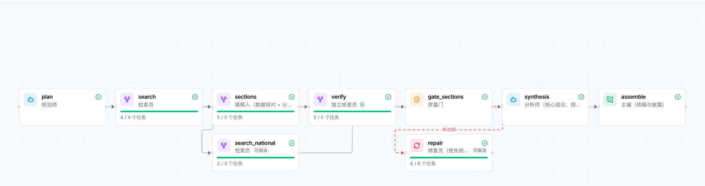
有几处设计值得说明。第一是 map 的扇出时机：章节数和搜索批次数不是写死的，而是等规划师产出后才知道，所以 map 节点在上游完成时才按真实数据展开成任务。第二是 search_national：规划之后，我们把“官方发布的全国口径数据”这一路检索单独拉出来，和分章撰写并行跑，它标记为非必要，预算吃紧时可以被取消；这是针对第一次真实运行里“只搜到单个学校数据、写成全国”的问题加的。第三是核查对撰写的流水线依赖（pipeline: true）：核查第 i 章只需要第 i 章的初稿，不必等全部章节写完，调度器支持这种逐项依赖（4.1 节），于是写作和核查可以交错进行，实测整体耗时因此明显下降。
“独立”不能只是一个名字。如果核查员拿到了撰稿员的推理过程，它很容易顺着那条思路得出同样的结论，核查就变成了复读。所以定义里用 can_see 显式列出核查员可以读什么：只有成稿（draft）和证据（evidence）。把它写成包含 reasoning 的列表，导入时就会被拒绝。运行时，核查员也不是读撰稿员已经检索好的证据，而是对每一章重新检索、重新对每条说法分级，再和撰稿时的结论比较，更差就下调（运行指标里的“核查员下调”条数）。
为了回应“平台是否只服务于报告”的疑问，内置了第二套定义 fact-check：说法抽取员把一段文字拆成原子性的事实说法，检索员逐条联网查证，核查员独立分级，汇总员输出带出处和等级的核查表。它只有四个节点、四个 Agent，用的是同一个调度器和同一套分级规则。我们用一段刻意写错的文字做过试验：人均可支配收入原文是 39218 元，输入里写成 41218 元。结果是两条国内生产总值的说法被权威来源核实，写错的那条被标为“未能核实，来源说法与之不同”，增速一条只找到单一来源。没有被抽取阶段覆盖到的原始说法，也会明确标成“未能核实”，而不是悄悄消失。
在“工作流定义”页，用户可以直接编辑 YAML：增删节点、调整依赖、修改质量门阈值与修复轮数、设置每个 Agent 使用的模型，点“校验”后画布会按当前文本刷新，再“保存为我的定义”就能在新建运行时选用。内置定义是只读的，只能另存为新名字。新建运行时还可以为这一次运行选择统一模型，或者逐个 Agent 指定模型；选择只写入这次运行自己的副本，不会改动保存的定义。需要说明的是，目前画布只用于展示，不支持拖拽拼装，节点背后能用的“积木”也是系统内置的十一个技能，这一点在 7.5 节的局限里会再提。
调度器（scheduler.py，约 330 行）是一个与业务无关的 asyncio 调度器。它的对象只有两种：任务（Task）和调度组（Group，对应工作流里的一个节点）。一个组里有若干任务，组可以声明“依赖哪些组”以及“如何展开”。主循环的伪代码如下。
loop:
for group in groups: # 展开：依赖满足的组，按真实数据生成任务
if not group.expanded and deps_ok(group): group.tasks = await group.expand()
mark_blocked_groups() # 上游失败的组直接标记跳过，不去执行
ready = [t for t in all_tasks if t.pending and needs_done(t)]
for t in sorted(ready, key=(priority, queued_at)):
if not t.essential and not budget_ok(): skip(t); continue # 预算用尽先放弃它
launch(execute(t)) # 在对应资源池的信号量下执行
if nothing running: abandon_unfinished(); break
wait(FIRST_COMPLETED | wake_event) # 任一任务结束或有新组插入就醒来
每个任务在执行时经过以下几道机制。
needs（上游某个具体任务），调度器据此让下游第 i 项在上游第 i 项完成后立即开始；上游某项失败时，对应的下游项记为失败，整个下游组因此不会“ok”。这几点里最容易被忽略、也最花时间调的，是“上游失败怎么传下去”。早期版本里，下游任务如果依赖的组整体失败会被跳过，但逐项依赖加入后，必须保证“某一项失败”不会让整组看上去成功。我们为此单独写了测试（调度器测试共 8 项，覆盖并行扇出、资源池上限、重试与下游处理、运行中插入、预算下跳过非必要任务、模型降级、逐项流水线与逐项失败）。
最直接的收益来自把任务摊到资源池里并行。我们用平台自己的“保存自定义定义”做过一次对照：同一主题、同一份定义，只把搜索与模型并发上限改成 1。起草阶段（规划、检索、分章撰写、独立核查，不含修复）串行 875 秒、并行 435 秒，实测加速 2.01 倍。
后来我们又连续做了几轮针对耗时的优化，并且在做之前先回答了一个问题：慢，是不是因为搜索被限流？统计了保存下来的 8 次真实运行后发现，搜索任务累计耗时只有模型任务的两成左右，“至少有一个搜索在跑”的时间占总耗时的 24% 到 46%，而且大半与模型工作重叠；搜索批次失败为 0，重试 0 到 1 次，那次重试其实是 Qdrant 集合并发创建的竞态，不是限流。所以主要的时间花在模型调用上（每次 10 到 30 秒，且章内多步串行）。基于此，我们做了：核查与撰写的逐项流水线、综合研判里各条建议的前提并发核验、补证检索并发、全国口径检索与撰写并行、模型并发从 4 提到 6。这些累积下来，同一主题（新能源汽车）的耗时从 13 到 22 分钟降到 9 分钟左右，3 个主题的最新一轮运行为 379 到 545 秒（7.1 节），并行加速比 3.3 到 3.5 倍。需要提醒的是，总耗时仍然强烈依赖修复轮数：一轮修复就是 4 到 5 分钟。
自循环由质量门触发。门的指标由纯函数计算，包括：已核实说法占全部说法的比例、有权威来源支持的章节占比、来源原文里找不到的数字个数、范围错置的章节数（只有单个学校或地区的数据，却没有声明不代表整体）。四项分别对照策略里的阈值，任一项不达标，门就不通过，并给出按章节归类的失败项。流程见图 3。
失败类型决定修复动作，而不是“重新来一遍”。证据不足（说法只有单一来源或未能核实）和缺少权威来源，先补检索（官方发布、全国口径），再逐章重写；数字对不上原文，重写；范围错置，重写，仍不行就在正文里写明“该数据不代表全国”。修复员的每次重写都必须交给核查员复核，只有在复核后的已核实比例不比原稿差时才被采用，否则保留原稿，运行页里会显示“放弃重写，保留原稿”。
终止条件有四条，满足任一条循环就结束：质量门通过；一轮修复后已核实比例没有提升（无进展）；达到策略规定的最大修复轮数（内置定义为 2，且硬性不超过 4）；预算已用掉 60% 后不再开始新一轮修复。由于每一轮都会让“轮次”这个有限计数加一，而轮次的上界在定义校验时就固定了，所以循环必然终止，不依赖模型自己判断“差不多了”。
这套“采用条件”和“无进展即停”不是一开始就有的。第一次拿真实主题跑完整流程时，旧版自循环跑了 2 轮，多花了约 14 分钟，已核实比例反而从 38% 降到了 34%：重写把原本站得住的句子改坏了。这件事让我们把“重写必须不差于原稿才采用”和“一轮无进展就停”写进了机制，而不是靠提示词去劝模型“小心一点”。
后来的运行里这两条规则确实在起作用。以新能源汽车主题的最新一次运行为例：质量门第一次检查已核实比例为 34%，未达到 50% 的门槛；修复阶段共尝试了 5 章的重写，其中 4 章因为复核分数低于原稿而被放弃（例如“总体规模”一章重写后从 0.89 掉到 0.33），只有 1 章被采用；复查时已核实比例升到 51%，通过。如果没有“不比原稿差才采用”这条规则，这 4 章会被改得更差。
平台的验证不是一道关卡，而是四层，前两层是确定性的，后两层引入了模型，但模型的角色被限定在“提取事实”，结论由规则给出。
第一层，数据点逐字核对。撰稿员从证据里摘取数字时，必须同时给出来源编号和来源里陈述这个数字的那句原话；系统核对这句原话是否逐字出现在来源文本中，核对不过的数据点直接丢弃，不会进入表格和图表。报告里的数据表、趋势图和证据核实图都只用通过这一关的数据点，所以图里画的数字都能追到原文。
第二层，说法分级。报告里的每条说法被拆成原子性的断言，模型只负责指出“哪些来源支持它、哪些来源反对它、它是否有时效性”，说法的等级则由固定规则判定：
来源按“权威（政府、统计、教育科研、国际组织）、参考、一般、低”四级分层；同一内容被多个站点转载算作同一个来源，不能凑数；一个来源是否算“支持”，还要看它的文本是否带有说法中的数字，避免模型把“141178 万”读成“1.41 亿”后拿这个页面当证人。有时效性的说法，如果最新的支持来源比阈值更老，会被标为可能过时。这些规则都写在审计模块的文档里，任何一个等级都能由来源列表复现。
第三层，独立复核（recheck）。模型抽取出的“某来源支持某说法”并不总是可靠，所以在分级之前，我们让一个独立的复核步骤对每条说法单独、带着来源的完整段落重新判断“这个来源是否真的支持”，并且一个来源只有在两次都被否决后才被剔除。
第四层，质量门。汇总前面几层的结果，算出已核实比例、权威覆盖等四项指标，对照策略阈值，决定是进入综合研判，还是触发修复（4.3 节）。
第三层最后的样子，是反复吃亏之后留下来的，这里把过程如实写下来，因为它比最终结果更能说明为什么要这样设计。
第一版复核过于严格。它把“万”和“亿”的换算当成不一致，把“约”“据新华社报道”这类措辞差异当成否决理由，结果许多本来站得住的说法被降级。放宽提示词之后，又出现了随机性：同一条说法有时被判通过、有时被判否决，偶发的误杀会让一个本来有两个独立来源的说法掉成“单一来源”。我们据此加了“两次否决才剔除来源”的规则，把单次随机误判的影响压下去。再往后是成本：对每条说法分别复核，token 用量几乎翻倍，在预算有限的运行里，修复阶段被整个跳过了（质量门没通过，因为预算不够去修）。我们先后尝试了“多条说法合并成批复核”和“只给来源的一个窗口”两种省钱办法，在同一批题目上它们都让判断准确率明显下降，所以最终放弃，回到“逐条、完整段落”，改为调高预算。这个取舍的结论是：在这件事上，省 token 的办法几乎都是以准确率为代价的。
验证本身也需要被验证。我们为说法分级维护了一套金标集：每个用例有一段待核查的文字、若干来源，以及人工标好的“每条说法应该是什么等级”，由脚本（eval/run_verification_eval.py）在真实模型上跑并统计，用例里包含造假数字、张冠李戴、单位错置、过时说法、引文伪造、转载同源等类型。表 4 是最新一轮的结果。
| 数据集 | 用例 / 金标说法 | 等级判断准确率 | 假通过率（错说法被判已核实） | 说法抽取召回 |
|---|---|---|---|---|
| 合成来源（刻意构造的疑难用例） | 48 / 100 | 97.7%（95% 区间 94.3%–100%） | 0 / 46 | 88%（81%–94%） |
| 真实网页（保存下来的真实页面） | 28 / 60 | 100%（n = 46） | 0 / 15 | 76.7%（65%–86.7%） |
在引入逐条复核之前，同一批真实网页上的假通过是 3 / 17；引入之后是 0 / 15。这是我们判断“复核值得它的 token 成本”的主要依据。
但这些数字有三点必须讲清楚。第一，样本小：假通过率为 0 的置信区间在这样的样本量下并不窄，不能读成“不会出错”。第二，评测使用的是同一个模型，既是被评对象也在复核环节里，没有换更强的模型做交叉验证。第三，说法抽取召回只有 77% 到 88%，也就是说有一成到两成的事实性说法根本没被抽出来，它们没有被核查，这是目前验证覆盖面上的缺口，我们在报告里没有手段把它们标出来。
反馈有两个来源：用户对回答和运行结果的“有用 / 没用”及原因；质量门和核查员记录下来的失败类型。平台把它们按类型聚合，生成“改进建议”页：例如某类失败（证据不足）在最近多次运行里占比最高，建议放宽或收紧检索词、优先哪些权威站点、质量门的阈值是否合理。需要老实说明的是，这一层目前只做到“提示”：它按规则给出建议，但不会自动修改提示词或策略并上线；修改仍由人来做，改完要用金标集再跑一遍，确认指标没有退步。我们在计划里写过“自动生成改进候选、回归门控发布”的完整闭环，这一部分没有做完，也不想在方案书里写成已经做到。
项目后端约 2.1 万行 Python（含脚手架自带的认证、会话、上传等部分），前端约 2.2 万行 TypeScript / TSX，数据库有 33 个迁移脚本。与本方案直接相关的核心模块列在表 5，行数为当前仓库的实际统计。
| 位置 | 行数 | 职责 |
|---|---|---|
services/orchestration/spec.py | 220 | 定义层：YAML 解析与 Pydantic 校验（循环依赖、缺失引用、门阈值、核查员隔离） |
services/orchestration/scheduler.py | 335 | 调度器：就绪集、资源池、重试与超时、预算、运行中插入、逐项依赖 |
services/orchestration/engine.py | 328 | 把工作流编译成调度组，记录事件，计算运行指标，模型选择 |
services/orchestration/skills.py | 496 | 11 个技能：规划、检索、撰写、核查、修复、综合研判、统稿，以及事实核查的四个技能 |
services/orchestration/verification.py | 142 | 质量指标、失败诊断、门阈值判定（纯函数） |
services/orchestration/facade.py | 280 | 对外服务：定义与运行管理、取消、删除、导出，运行时的模型写入 |
services/research/audit.py | 501 | 说法抽取与分级规则、来源独立性、逐条复核 |
services/research/report_builder.py | 543 | 分章撰写、数据点核对、综合研判、报告组装 |
services/research/report_diagrams.py | 242 | 证据核实图与时间线，Mermaid 与 PNG 输出 |
graph/retrieval_correction.py、generation_correction.py | 271、323 | 问答模块的检索纠错与回答纠错（LangGraph 状态机） |
services/rag/retrieval.py、reranker.py | 294 等 | 稠密 + BM25 + RRF + 重排的检索链 |
frontend/src/components/orchestration/ | — | 编排平台界面：画布、运行视图、质量门面板、时间线、报告阅读、定义页 |
以下截图都是真实环境下截取的，没有使用模拟数据。图 4 是一次正在进行中的运行：节点按状态着色，进度条显示并行扇出里已完成的任务数，下方的瀑布图按任务显示开始和持续时间，可以直观看到“搜索批次并行、分章撰写并行、核查随后跟进”。
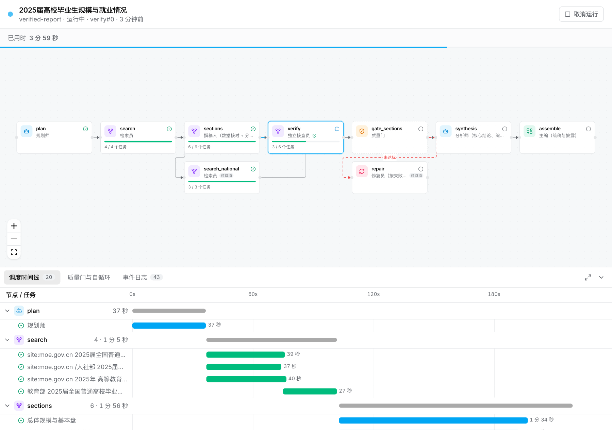
图 5 是运行结束后的质量门面板：左侧可以切换“首次检查”和“修复后复查”，右侧给出四项指标与门槛的对照，下面按章节列出失败项。这就是第四节所说的“可回放的修复轨迹”。
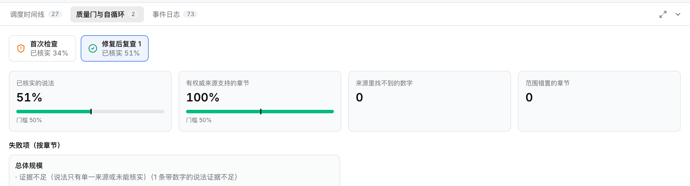
图 6 展示完整的瀑布图和指标行。顶部的指标行里有总耗时、任务数、并行度、自循环轮数、核查员下调条数、模型调用次数与 token 数、已核实比例的前后变化。
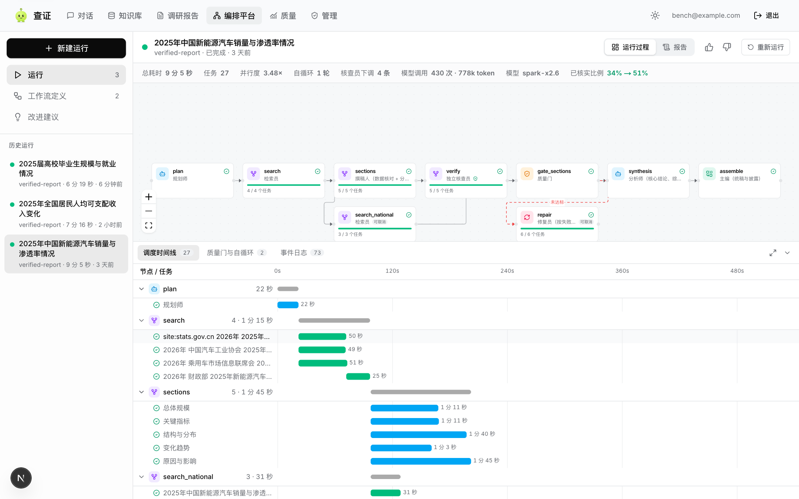
图 7 是新建运行对话框中的模型选择：可以统一指定一个模型，也可以展开后给每个 Agent 单独指定。图 8 是“工作流定义”页，上方是画布，下方可以切换智能体、策略和 YAML 三个视图，改完点“校验”即可刷新画布。
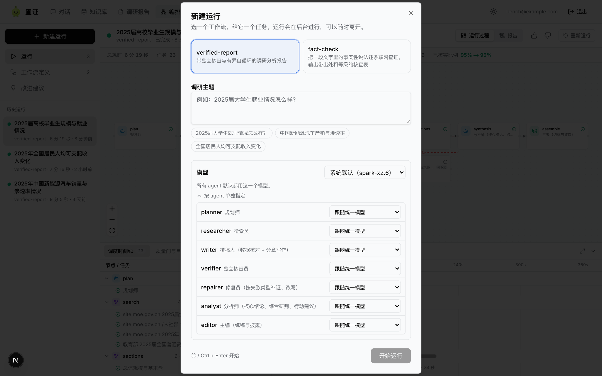
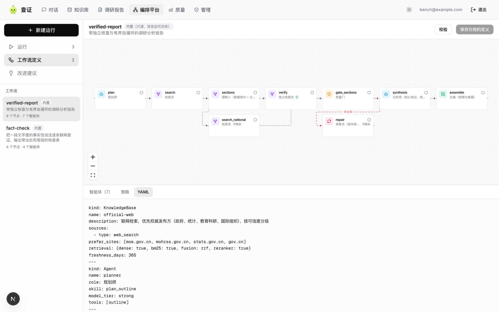
图 9 是运行产出的报告阅读视图：左侧目录，顶部是逐条核验的统计徽章（本例 93 条说法中已核实 91 条），并提供 Word 与 PDF 下载。图 10 是同一份报告里由代码根据已核对数据生成的“证据核实图”：每章框里标出“已核实几条 / 共几条”，颜色从绿到红表示依据是否充分。
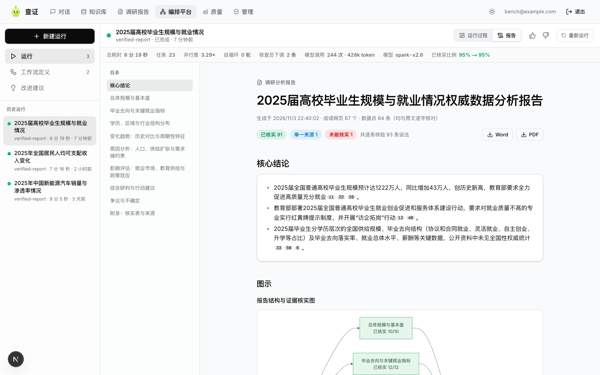
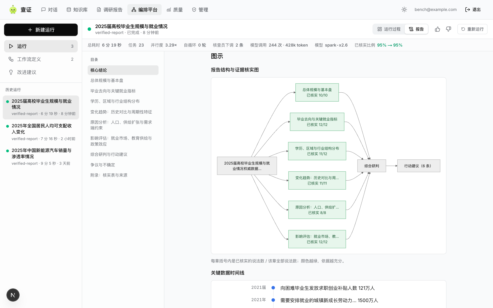
图 11 与图 12 是“查证”问答模块：右侧的“运作流程”面板展示这个回答背后经历了检索、判断资料是否够用、换问法再检索、核对回答、补充检索、再次核对的完整路径；点“展开详细过程”可以看到每一步检索了哪些资料、每段资料的语义相似度、关键词匹配和重排得分。这个例子里系统自己判断“资料只覆盖了问题的一部分”，给出了有依据的那部分，并说明不完整的原因，而没有硬凑一个完整的答案。
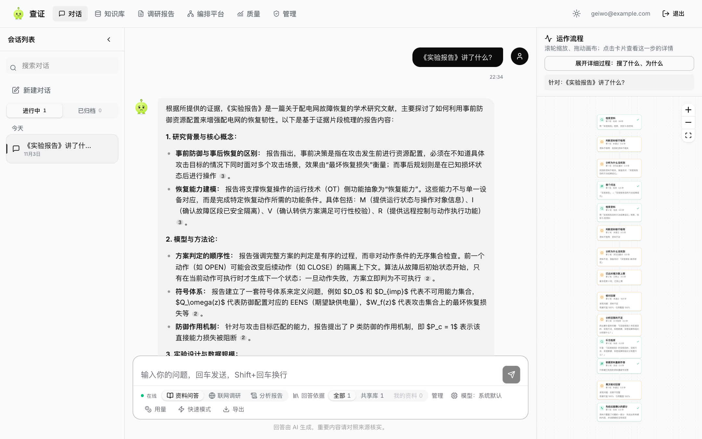
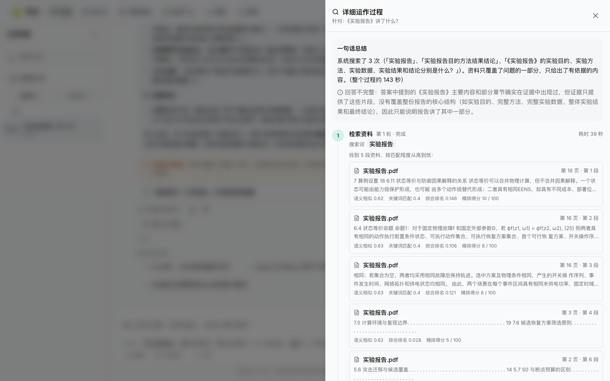
后端有 487 项自动化测试（pytest），当前全部通过，另有 4 项因环境条件被跳过；前端有类型检查、静态检查和单元测试，端到端测试用 Playwright 在桌面和手机两种视口下覆盖登录、问答、知识库、报告与编排页面的主要路径，共 18 条用例。与本方案直接相关的测试按模块列在表 6，我们尽量让每条测试对应一个“如果这里出错，真实运行里会看到什么”的具体问题。
| 测试文件 | 项数 | 覆盖的行为 |
|---|---|---|
| test_orchestration_scheduler | 8 | 按依赖并行扇出、资源池上限、失败重试与下游处理、运行中插入组、预算下跳过非必要任务、模型降级不耗重试、逐项流水线、上游某项失败时下游对应项失败 |
| test_orchestration_engine | 10 | 并行与统稿；质量门失败触发修复并修好；无进展停止；劣化重写被拒绝；模型失效后降级完成；搜索全挂时给出可读错误；定义校验；失败诊断与门判定 |
| test_orchestration_models | 4 | 统一模型、Agent 自己的模型的优先级；失败模型被摘除后跟随运行；运行时的模型写入副本、未知 Agent 被拒绝 |
| test_orchestration_cancel | 3 | 取消运行、搭建引擎阶段出错不会让运行一直停在“运行中” |
| test_support_recheck | 6 | 逐条复核的两次否决规则、整段原文、预算相关行为 |
| test_report_diagrams | 5 | 证据核实图的节点与边、Mermaid 文本不含会截断标签的字符、时间线至少三个日期且按时间排序、占比饼图的判定、PNG 渲染 |
| test_generation_correction、test_retrieval_correction | 10、7 | 问答模块的回答纠错、检索纠错与拒答 |
| test_report_via_orchestration | 3 | 调研报告走编排引擎、失败运行的错误如实抛出、删除进行中的运行会先取消它 |
环境：讯飞星火 spark-x2.6；联网检索用自建 SearXNG；每次运行在临时库和临时向量集合里进行，运行记录与事件日志保存在仓库的 artifacts/orchestration-runs/ 中，下表由其中的 JSON 汇总而来。
| 主题 | 总耗时 | 任务 | 模型调用 | token | 并行加速 | 修复轮数 | 核查员下调 / 质量门 |
|---|---|---|---|---|---|---|---|
| 2025 届高校毕业生规模与就业情况 | 379 秒 | 23 | 244 | 42.8 万 | 3.29× | 0 | 2 条；首轮通过（已核实 95%） |
| 2025 年全国居民人均可支配收入变化 | 436 秒 | 21 | 265 | 55.9 万 | 2.95× | 0 | 0 条；首轮通过（已核实 72%） |
| 2025 年中国新能源汽车销量与渗透率情况 | 545 秒 | 27 | 430 | 77.8 万 | 3.48× | 1 | 4 条；首检 34% 未通过，修复后 51% 通过 |
需要提醒读者：前两个主题没有触发修复，所以耗时比第三个短很多，并不能说明“流水线让耗时减半”；不同主题的数据面宽窄、能搜到多少权威来源差别很大，质量门首轮是否通过也因此不同。每个主题我们只记录了一次运行，没有做重复统计。
同一个新能源汽车主题，我们在不同版本下留下了运行记录，可以看到质量门这个环节本身的波动。早期版本首检 17%，修复一轮后 55%，通过；中间的一个版本首检 21%，修复两轮后依次为 43%、48%，两轮都没有达到 50% 的门槛，权威来源覆盖也一直只有 20%（所以最终是“带披露交付”，而不是假装通过）；最新版本首检 34%，一轮后 51% 通过。这三次运行说明了两件事：一是质量门通过与否对同一主题也有明显的随机性；二是平台在没通过时的做法是交付稿件并在“争议与不确定”里披露，而不是绕过。
问答模块的耗时主要取决于检索和核对的轮数。针对单次问答，我们把重排只返回前几条、证据判断在资料充足时省略长文字说明之后，检索阶段从约 9.4 秒降到约 5.6 秒，一次完整的问答（检索、判断、生成、核对）约 21 到 30 秒降到 21 秒左右。报告耗时的演进在 4.2 节已经说明，这里补一个提示：流水线、并发核验和更大的并发池只能缩短“没有修复”的那部分；修复轮每轮仍要 4 到 5 分钟，是目前最大的单项耗时。
为了回答“自纠错到底有没有用”，我们为问答模块设计了固定的评测集：13 道专门设计的题目和 97 份文档，其中 40 份是与主题相近的干扰文档；题目故意让首轮检索词找不到答案，因而基础检索和混合检索的召回为 0 是设计使然，这一点在评测面板上也有说明，不是系统出了问题。表 8 由脚本 eval/run_p5_evaluation.py 生成。
| 做法 | Recall@5 | 有据率 | 完整度 | 引用准确率 | 拒答准确率 | 平均耗时 |
|---|---|---|---|---|---|---|
| 基础检索 | 0.0 | 0.0 | 0.0 | 0.0 | 0.0 | 8.9 秒 |
| 混合检索（BM25 + RRF + 重排） | 0.0 | 0.0 | 0.0 | 0.0 | 0.0 | 12.6 秒 |
| 检索纠错 | 0.8 | 0.80 | 0.80 | 0.85 | 0.0 | 35.3 秒 |
| 完整自纠错（检索纠错 + 回答纠错） | 1.0 | 1.0 | 1.0 | 1.0 | 1.0 | 42.7 秒 |
可以看到，完整自纠错的代价是耗时约为基础检索的五倍，换来的是该答的答上、该拒的拒掉。13 道题的样本很小，数字不是 0 就是 1，不应被当成统计结论，更不能当作真实使用时的准确率；评测页面顶部也用醒目的提示说明了这一点。
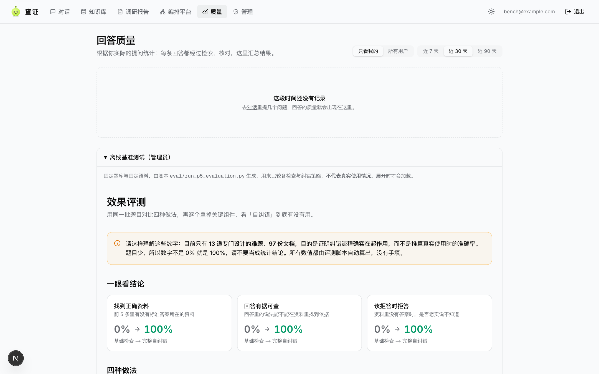
我们把已知的不足集中写在这里，评审也可以据此判断哪些结论可以相信到什么程度。
运行时用到两个模型。对话、规划、撰写、核查、重排等所有文本生成与判断，用的是讯飞星火 spark-x2.6，通过 OpenAI 兼容接口调用，地址、模型名与密钥全部来自环境变量，可以换成任何兼容服务；文本嵌入用 nomic-embed-text（768 维），由部署在服务器上的 Ollama 提供。系统没有使用多模态能力，也没有对模型做微调。
我们刻意把“模型做什么”和“代码做什么”分开写（表 9）。大致的原则是：需要理解语言的地方交给模型，需要保证一致、可复现的地方交给规则。
| 环节 | 模型做的事 | 规则或代码做的事 | 局限 |
|---|---|---|---|
| 规划 | 拆提纲、为每章写检索词、列需要的指标 | 校验提纲结构、去重检索词 | 提纲质量因主题而异，没有专门评测 |
| 检索与重排 | LLM 重排：给候选段落打 0–100 分 | 稠密 + BM25 + RRF 融合；来源可信度分层；同源转载归并 | 重排输出格式偶发被截断，已做容错解析 |
| 数据摘取 | 从证据里抽数字、给出出处原话 | 原话逐字核对，核对不过则丢弃 | 召回不稳定 |
| 撰写 | 分章写作、综合研判、行动建议 | 清除“来源里找不到的数字”所在的句子、清除泄露提示词的句子 | 仍可能写出措辞过强的结论，因此研判和建议单独标“依据强度” |
| 说法分级 | 抽取原子说法；指出支持、反对的来源 | 等级由固定规则判定 | 抽取召回 77%–88% |
| 独立复核 | 逐条判断来源是否真的支持说法 | 两次否决才剔除来源 | 耗 token 多，难以进一步压缩 |
| 质量门与调度 | — | 全部由代码完成：指标计算、阈值判断、轮次与预算 | — |
| 问答纠错 | 判断证据是否够用、诊断失败类型、回答是否有据 | 最大轮数限制；用户只看到校验后的最终答案 | 完整流程耗时约为基础检索的五倍 |
问答模块的检索链是稠密向量检索与独立的 BM25 稀疏召回分别从完整索引取候选，再用 RRF 融合，最后由 LLM 重排。这里有一个小插曲：项目最初借用的脚手架里“BM25”只是对稠密候选做重排，并不是真正独立的稀疏召回，我们在 P1 阶段改成了两路分别召回。报告模块的“知识库”则是联网检索：SearXNG 搜索、抓取网页正文、按可信度分层，并为每次运行建立一个临时的 Qdrant 集合，写入网页分段，运行结束即删除，避免不同运行之间互相污染。所有网页内容在送进模型前都被当作不可信数据处理，提示里有专门的说明，要求模型不执行网页里夹带的指令。
赛题的说明里提到了 MCP。我们的系统没有使用 MCP。工具层是一个内部的“技能注册表”：十一个技能由代码固定注册，Agent 只能调用自己定义里声明的技能；这样做的好处是调用面可控、可测试，也减少了外部工具带来的攻击面，代价是不能在不改代码的情况下接入新的外部工具。如果后续要接入 MCP，思路是把一个 MCP 工具包装成技能并在定义里声明，但这部分没有实现，这里不做承诺。
模型的贡献是真实的：没有它，就不可能在几分钟里读完几十个网页、抽出数据、写出可读的分析。但同样真实的是它的不足，我们在开发中直接遇到过：
因此，平台里的“已核实”只是系统按照规则给出的判断，不是事实的终审；报告里每条结论保留了来源编号和原文出处，需要的人可以自己核对，这也是我们坚持“可追溯”而不是“让你信我”的原因。
系统使用的资料来自公开网页和用户自己上传到知识库的文档。生成内容在报告里统一披露了方法、检索词、阅读的网页数量、数据点保留与丢弃数量、使用的模型和时间；对没有把握的内容，系统写的是“公开资料中未找到”或“单一来源”，而不是用模型的常识去补。用户的账户、对话和运行记录保存在自己部署的数据库里，系统本身不会拿这些数据去训练模型；不过请求会发送给所配置的模型服务商，对方如何处理这些数据取决于它的服务条款，这一点我们没有评估。
回头看，这个项目最有价值的部分不是某一个漂亮的功能，而是几次“被现实打脸”之后留下的规则：自循环要先看有没有变好再决定留不留；复核要两次否决才算数；质量门没过就写明没过。它们都不炫，但每一条背后都有一次具体的、让我们皱眉的运行记录。我们也清楚现在离“成熟的平台”还有距离——拖拽编辑、断点续跑、更多种类的积木、自动化的反馈闭环、更大规模的评测，都还没有做。我们希望评审在看这份方案时，能把已经做到的和没做到的分开看，我们也尽量这样写了。
0036_orchestration 中。uv run pytest；说法分级评测 eval/run_verification_eval.py；问答消融评测 eval/run_p5_evaluation.py；编排运行汇总 eval/orchestration_eval.py。artifacts/orchestration-runs/，评测报告保存在 artifacts/，本文的表格数据均可由这些文件复算。注：本文中的耗时、token 与指标均为作者在上述环境下的实测值，受模型输出的随机性、网络与搜索服务状态影响，复现时会有波动。